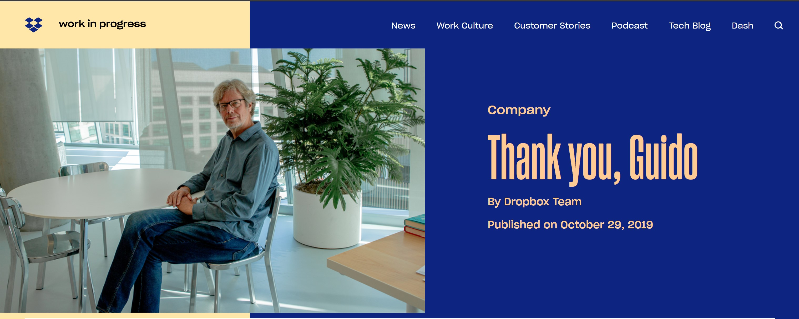

CWI
Guido trabajó en el Centrum Wiskunde & Informatica, una institución de investigación de los Países Bajos.
Su carrera pasó por diferentes instituciones y empresas antes y después de la creación de Python.
Guido trabajó en el Centrum Wiskunde & Informatica, una institución de investigación de los Países Bajos.
Se publica una primera versión de Python y otras personas comienzan a utilizar el lenguaje.
Guido continúa trabajando en Python mientras forma parte de la Corporation for National Research Initiatives.
Se crea la Python Software Foundation para apoyar y proteger el desarrollo y la comunidad relacionada con Python.
Guido se incorpora a Google y trabaja en diferentes proyectos de la empresa.
Comienza a trabajar en Dropbox, donde Python tenía un papel importante dentro de la tecnología utilizada por la empresa.
Guido deja su posición histórica como líder principal del desarrollo de Python.

Etapa en Dropbox